Build a payoff before chasing a huge hit. Obeka's damage produces extra upkeeps after combat, not extra turns, untaps, or ordinary draw steps. A protected connection with one useful engine is better than an enormous Obeka with nothing to trigger.
Make the first connection count

Brotherhood Regalia
Three total mana to cast and equip your legendary commander gives unblockability and ward two. Usually the best first equipment because a modest hit already advances the engine.
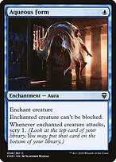
Aqueous Form
One mana buys unblockability and an attack scry. It is efficient but exposes you to losing the Aura when the creature is removed, so keep protection available.
 +
+Silent Arbiter + Obeka, Splitter of SecondsArbiter permits at most one blocker, while menace requires at least two, so Obeka cannot be legally blocked while both effects apply. This also slows incoming armies. You can only attack with one creature, so your Dragons become defenders or Court fuel until Arbiter leaves.
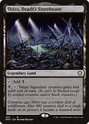
Shizo, Death's StorehouseA land-slot route through blockers. Fear still permits black and artifact creatures to block; combined with menace, the defender needs at least two eligible blockers.

Lightning GreavesHaste and shroud protect an immediate attack. Move the boots off before equipping other equipment or casting an Aura on their wearer; shroud prevents your targeting too.

Swiftfoot BootsA slightly more expensive haste option that leaves your own targeting available. Hold the equip mana when recasting Obeka through commander tax.
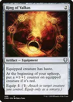
Ring of ValkasGives haste and adds a counter at each upkeep while attached to the red commander. Counters added after combat enlarge the next attack; they do not retroactively increase damage already dealt or create more upkeeps this turn.
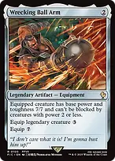
Wrecking Ball ArmMakes Obeka a base 7/7 for five total mana to cast and equip. Small creatures cannot block her, but two creatures with power three or greater still can; add actual unblockability against them.

Blackblade ReforgedConverts normal land development into more damage and therefore more upkeeps. Its bonus and +1/+1 counters apply on top of Wrecking Ball Arm's base 7/7.
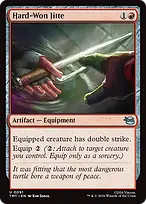
Hard-Won Jitte

Doubles combat-damage opportunities. An unblocked seven-power Obeka can produce fourteen extra upkeeps, but all occur after the entire combat phase, not between first-strike and regular damage.
Win from the upkeep triggers
++
Obeka, Splitter of Seconds + Wrecking Ball Arm + Court of EmberethA seven-damage connection gives seven extra upkeeps. Starting those upkeeps with Obeka and one other creature, the Court alone deals 3+4+5+6+7+8+9 = 42 to each opponent, provided you stay monarch and the creatures survive.
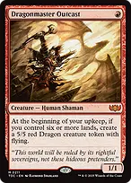
Dragonmaster OutcastOnce you have six lands, each upkeep makes a 5/5 flyer. The condition must be true as the upkeep begins and when the trigger resolves. This is a turn-six-and-later threat; it does little in an early hand.
 +
+Court of Vantress + Court of EmberethCopy the damage engine while monarch. A new Court becomes monarch on entry and starts triggering on the next upkeep, not the upkeep in which it entered.
+ Court of Vantress + Court of CunningCopy the mill engine to turn later upkeeps into much larger library reductions. You may copy an opponent's artifact or enchantment too; the target need not belong to you.
The list has no extra-turn effects, mass land denial, or built-in infinite loops. Its main wins require combat access, developed mana, and a surviving payoff. Treat turns six through eight as a construction target, not a measured or guaranteed kill turn.
Draw enough cards to keep playing
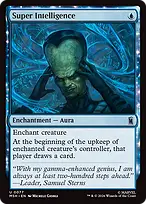
Super IntelligenceA one-mana upkeep draw engine attached to your creature. Putting it on a spare creature can spread your investment away from Obeka. It gives cards to the enchanted creature's controller, so do not casually put it on an opponent's creature.
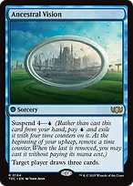
+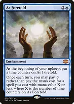
Ancestral Vision + As ForetoldSuspend Vision early, then accelerate its time counters with Obeka. Alternatively, As Foretold can cast the zero-mana-value spell from your hand without waiting for suspend.
Becoming monarch does not draw a card immediately, and extra upkeeps do not create extra monarch draws. The usual monarch card arrives at your end step. Hitting the monarch with Obeka can retake the crown before the added upkeeps start.
Supply mana during the long turn
 +
+
Arcane Signet + Fellwar StoneLow-cost fixing to deploy the commander and keep interaction available. The three Talismans serve the same early-development role; prioritize colored mana over a hand full of slow engines.
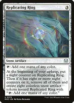
Replicating Ring
Every upkeep advances the eight-counter threshold. Once it creates eight Replicated Rings, those new noncreature artifacts can tap immediately. The original Ring itself does not untap during Obeka's extra upkeeps.
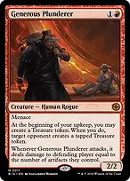
Generous PlundererGives you an untapped Treasure each upkeep if you choose, while one opponent gets a tapped Treasure. Their gift is a real resource for their next turn; distribute it deliberately rather than feeding the strongest opponent.
As ForetoldExtra upkeeps increase the size of spell it can cast, but the allowance is once per turn, not once per upkeep. It can supply a free instant on each opponent's turn as well when you retain a suitable card.
 +
+The Soul Stone + Twilight ProphetOnce harnessed, the Stone can restore a dead Prophet during an upkeep. The returned Prophet will not trigger until a later upkeep; sequence the recovery before expecting more drain.
Exploit the initiative
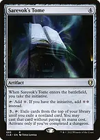
Sarevok's Tome
Takes the initiative and normally taps for two colorless while you hold it. After completing a dungeon it can cast a revealed nonland card, but its tap abilities still need an untap before reuse.
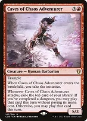
Caves of Chaos AdventurerAdds the initiative while supplying a substantial body to defend the crown. Attack with it for another card when doing so does not compromise Obeka's connection; Silent Arbiter limits you to one attacker.
While you have the initiative, each upkeep advances one room in the Undercity. Taking the initiative also advances it, even if you already held it. Finishing the dungeon does not discard the initiative; the next venture begins another run.
The common route is Secret Entrance, Forge, Trap!, Archives, then Throne of the Dead Three. Forge puts two counters on Obeka, Trap! makes a chosen player lose five life, and Archives draws a card. The final room can deploy a creature from the top ten, but this list is not creature-heavy enough to guarantee a hit.
The three basics give Secret Entrance real targets; the original duals and shocks are not basic land cards. Running out of basics later does not prevent progressing through that room.
Finishing a dungeon after combat turns on Rilsa's bonus for a later attack. Neither the new bonus nor postcombat Forge counters increase upkeeps that have already been generated.
Spend tutors on what the hand lacks
 →
→Demonic Tutor → Court of EmberethFind the main finisher when you already have a protected, substantial connection ready. Without evasion or a live commander, find the missing support first.
 →
→Profane Tutor → Court of VantressSuspend before combat so Obeka's added upkeeps can finish the two-counter wait. Find the copy engine when another useful enchantment is already present.
 →
→Fabricate → Brotherhood RegaliaFetch efficient unblockability when opponents have enough blockers to defeat menace.
→ Fabricate → Wrecking Ball ArmFetch power when Obeka can already connect. Damage and upkeep payoffs should both be ready before investing five mana in casting and equipping it.
→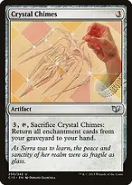
Fabricate → Crystal ChimesRecover after a destroy effect has put several Courts or draw enchantments in your graveyard. Chimes returns them to hand and you still have to recast them.
Keep the engine alive

Mithril CoatFlash it in to save a legendary creature from destruction; the entry trigger attaches it without an equip payment. It does not stop exile, sacrifice, or enough toughness reduction.
 +
+
Deflecting Swat + Deadly RollickFree interaction while you control Obeka. Swat can redirect targeted removal and Rollick removes a blocker or dangerous creature, but neither answers every kind of spell.
 +
+
Swan Song + An Offer You Can't RefuseKeep one blue mana available to protect the connection or stop a noncreature win. The gifts they leave behind matter, particularly if the opponent can use the Treasures immediately.
 +
+
Mana Drain + CounterspellUnconditional spell counters that remain useful without your commander. Drain's mana arrives at your next main phase, not during the intervening added upkeeps.
Feed the Swarm + Chaos Warp + ResculptCover troublesome enchantments, artifacts, creatures, and other permanents across the three colors. Warp can reveal a replacement threat, Feed costs life, and Resculpt leaves a blocker, so choose the answer that fits the board.
 +
+Soul-Guide Lantern + Court of CunningDo not feed an opposing graveyard engine without a plan. Keep Lantern untapped to exile opponents' graveyards, including in response to a shuffle-back trigger after milling its source.

Malakir Rebirth // Malakir Mire
Save a critical creature from dying or play the land face when needed. To return Obeka this way, leave her in the graveyard rather than moving her to the command zone.
Do not expose every Court at once when opponents still have a sweeping answer. Your enchantment recovery handles destruction, not exile.

Takenuma, Abandoned MireChannel to recover a creature when rebuilding matters more than another land. It cannot recover your destroyed Courts or equipment.
Opening hands and sequencing
Keep three lands with access to blue, black, and red, a two-mana accelerator, and either an evasion piece or a cheap engine. Two-land hands need both acceleration and a credible draw plan. Mulligan hands full of five- and six-mana payoffs.
A typical start is land development, a turn-two rock, then Obeka on turn three if safe. Use turn four to establish a payoff or protected connection. This is an example curve, not a reason to cast the commander naked into obvious removal.
The mana base has 36 lands plus Malakir Rebirth as a land option. Fetch untapped typed duals for the missing colors, and use the tapped surveil land or triome when it does not delay your curve.
Before combat, prepare evasion, power, and protection. After damage, count the exact added upkeeps and resolve them one at a time. Opponents receive priority; the batch is not an uninterruptible action.
Order simultaneous upkeep triggers deliberately. Creating extra creatures before Court of Embereth resolves increases its damage. A copied engine created during an upkeep only begins triggering on a subsequent upkeep.
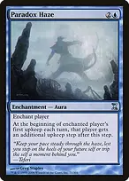
Paradox HazeGives one additional upkeep after your first upkeep each turn. It supplies redundancy without Obeka, but it does not trigger again from every extra upkeep.
Track separate pools for ordinary mana and Rousing Refrain's persistent red mana. Extra upkeeps do not untap lands, do not refresh As Foretold, and do not allow ordinary sorcery casting or equipping.
If Obeka is removed repeatedly, build around the Courts, Paradox Haze, and independent draw instead of paying commander tax immediately. Recover the engine, hold protection, and recast when you can get a useful hit.